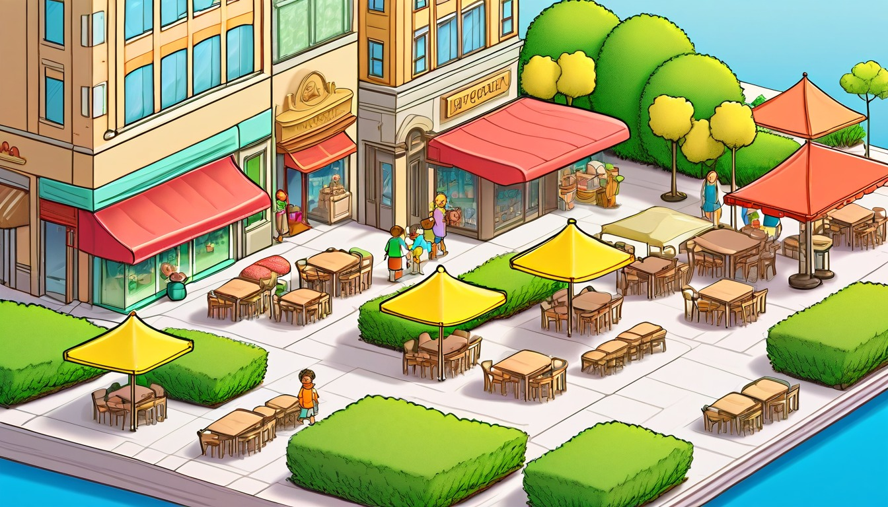

Sixteen card-catalog cards help writers retell a beginning snapshot, a middle clue, a turning choice, an ending answer, a favorite detail, and a next retell prompt.
Audience: Families, homeschool groups, tutors, and adult-led writing tables for writers ages 7-11.
Format: 16 printable card catalog story retell cards plus adult guide tools, retell routines, take-home retell slips, and optional adult prompts
Family-safe printable writing pages for adult-led, offline retell practice.
$95
Included
16 printable card catalog retell cards
Adult setup guide
Fictional retell safety notes
Beginning snapshot prompts
Middle clue prompts
Turning choice prompts
Ending answer prompts
Favorite detail prompts
Six adult-led retell routines
Ten take-home retell slips
Printable PDF and ZIP artifact
Adult guide
Retell coaching
Card Catalog Story Retell Adult Guide: ____________________.
Adult-led setup: place the card catalog label strip, blank retell slips, pencils, and one paper card on the table before the offline retell begins: ____________________.
Adult-led framing: keep every beginning snapshot, middle clue, turning choice, ending answer, favorite detail, next retell prompt, and card catalog label fictional: ____________________.
Adult-led order: move from beginning snapshot to middle clue, turning choice, ending answer, favorite detail, next retell prompt, and card catalog label: ____________________.
Adult-led support: let the writer write or dictate short paper-only retell lines while the adult keeps the card catalog stack sorted: ____________________.
Adult-led safety: use pretend names, broad made-up places, and invented actions instead of exact identifiers or personal facts: ____________________.
Adult-led close: reread the paper-only retell stack, choose the next retell prompt, and write the card catalog label: ____________________.
Use one story retell card at a time. Keep every retell line broad, invented, paper-only, and guided by an adult.
World menu
Sixteen retell card worlds
Pick a world image, then name the beginning, middle, turning choice, and ending in order.
Ages 6-8
Puddle Planet Post Office
Ages 7-9
Buttonwood Library Train
Ages 8-10
Cloudberry Clocktower
Ages 8-10
Tiny Lantern Reef
Ages 7-9
Acorn Avenue Errand Office
Ages 7-9
Pocket Park Notice Board
Ages 7-9
Penny Path Compass Shop
Ages 8-10
Orchard Pulley Post
Ages 8-10
Pond Bridge Blueprint Club
Ages 10-11
Revision River Ferry
Ages 10-11
Chapter Gate Greenhouse
Ages 10-11
Margin Note Market
Ages 10-11
Blue Pencil Observatory
Ages 10-11
Binding Day Boardwalk
Ages 7-9
Sticker Station Mail Cart

Ages 7-9
Paperclip Plaza Parcel Day
Retell routines
Choose the story retell routine
short paper retell setup: ____________________.
Beginning Snapshot Sort: ____________________.
Card catalog label strip, blank beginning snapshot slip, paper card, and pencil: ____________________.
The adult points to the beginning snapshot blank and names the retell task: ____________________.
The writer invents where the fictional story starts and who is there: ____________________.
The adult asks what one paper detail helps everyone remember the beginning snapshot: ____________________.
The writer writes the beginning snapshot on the slip and places it first: ____________________.
This retell begins with this beginning snapshot: ____________________.
middle retell pass: ____________________.
Middle Clue Match: ____________________.
Beginning snapshot slip, middle clue slip, paper card, and pencil: ____________________.
The adult rereads the beginning snapshot and points to the middle clue blank: ____________________.
The writer chooses one fictional middle clue that helps the retell move forward: ____________________.
The adult asks how the middle clue connects to the beginning snapshot: ____________________.
The writer writes the middle clue and places it after the beginning snapshot: ____________________.
The middle clue in this retell is: ____________________.
choice retell pass: ____________________.
Turning Choice Card: ____________________.
Middle clue slip, turning choice slip, paper card, and pencil: ____________________.
The adult lays the middle clue beside the turning choice blank: ____________________.
The writer invents one fictional turning choice the character makes after the middle clue: ____________________.
The adult asks what changes because of the turning choice: ____________________.
The writer writes the turning choice and tucks it behind the middle clue: ____________________.
The turning choice for this paper-only retell is: ____________________.
ending retell pass: ____________________.
Ending Answer Check: ____________________.
Turning choice slip, ending answer slip, paper card, and pencil: ____________________.
The adult rereads the turning choice and points to the ending answer blank: ____________________.
The writer names the fictional ending answer that finishes the retell path: ____________________.
The adult asks which earlier slip the ending answer connects back to: ____________________.
The writer writes the ending answer and places it after the turning choice: ____________________.
The ending answer closes this retell with: ____________________.
detail retell pass: ____________________.
Favorite Detail Finder: ____________________.
Retell slips, favorite detail slip, paper card, and pencil: ____________________.
The adult spreads the beginning snapshot, middle clue, turning choice, and ending answer slips in order: ____________________.
The writer chooses one favorite detail from the fictional retell stack: ____________________.
The adult asks why that favorite detail helps the retell stay clear on paper: ____________________.
The writer writes the favorite detail and adds it beside the ending answer: ____________________.
The favorite detail to remember is: ____________________.
retell wrap pass: ____________________.
Card Catalog Label Close: ____________________.
Finished retell slips, next retell prompt slip, card catalog label strip, and pencil: ____________________.
The adult rereads the beginning snapshot, middle clue, turning choice, ending answer, and favorite detail: ____________________.
The writer chooses one next retell prompt for another paper-only pass: ____________________.
The adult asks what card catalog label will help sort the fictional retell stack: ____________________.
The writer writes the next retell prompt and card catalog label, then the adult files the slips: ____________________.
The card catalog label for this retell is: ____________________.
Take-home retell slips
Try one retell later
Take-home retell slip
Retell slip 1
Adult: set out one paper slip and ask for a fictional beginning snapshot: ____________________.
Take-home retell slip
Retell slip 2
Writer: the beginning snapshot for my paper-only retell is: ____________________.
Take-home retell slip
Retell slip 3
Adult: ask which fictional middle clue belongs after the beginning snapshot: ____________________.
Take-home retell slip
Retell slip 4
Writer: the middle clue in this retell is: ____________________.
Take-home retell slip
Retell slip 5
Adult: ask what fictional turning choice follows the middle clue: ____________________.
Take-home retell slip
Retell slip 6
Writer: the turning choice is: ____________________.
Take-home retell slip
Retell slip 7
Adult: ask what fictional ending answer connects back to the retell path: ____________________.
Take-home retell slip
Retell slip 8
Writer: the ending answer is: ____________________.
Take-home retell slip
Retell slip 9
Adult: ask for one favorite detail and one next retell prompt: ____________________.
Take-home retell slip
Retell slip 10
Writer: the favorite detail, next retell prompt, and card catalog label are: ____________________.
Optional adult prompts
Optional adult-led paper prompt: the beginning snapshot starts with ____________________.
Optional adult-led paper prompt: the middle clue helps because ____________________.
Optional adult-led paper prompt: the turning choice changes the retell by ____________________.
Optional adult-led paper prompt: the ending answer connects back to ____________________.
Optional adult-led paper prompt: the favorite detail to keep is ____________________.
Optional adult-led paper prompt: the next retell prompt could ask ____________________.
Optional adult-led paper prompt: the card catalog label should say ____________________.
Optional adult-led paper prompt: the paper-only retell stack is filed under ____________________.
Retell Card 1 | Ages 6-8 | retell a fictional paper-only story by naming one beginning snapshot, middle clue, turning choice, ending answer, favorite detail, next retell prompt, and card catalog label: ____________________.
Puddle Planet Post Office Story Retell Card
Puddle Planet Post Office
Adult setup: Adult: set out a blank page, pencil, and pretend card catalog slip before the Puddle Planet retell begins: ____________________.
Writer: keep the puddle planet, tiny envelopes, and post office helper invented while every retell part stays on paper: ____________________.
Beginning snapshot
Beginning snapshot: write who stands at the pretend post office counter and what puddle envelope starts the story: ____________________.
Middle clue
Middle clue: write the small envelope mark, stamp shape, or puddle reflection that helps the helper remember the middle: ____________________.
Turning choice
Turning choice: write the helper's paper choice when two pretend envelope bins seem possible: ____________________.
Ending answer
Ending answer: write how the helper answers the puddle-envelope question in a calm invented way: ____________________.
Favorite detail
Favorite detail: write one tiny Puddle Planet detail worth keeping in the retell: ____________________.
Next retell prompt
Next retell prompt: write one new paper question an adult can ask when this story is retold later: ____________________.
Card catalog label
Card catalog label: write the broad pretend label that files this Puddle Planet retell card: ____________________.
Quiet option: fill only the beginning snapshot, ending answer, and card catalog label blanks first: ____________________. Take-home line: retell this pretend Puddle Planet page later with one new envelope detail: ____________________.
Retell Card 2 | Ages 7-9 | retell a fictional paper-only train story by linking a beginning snapshot, middle clue, turning choice, ending answer, favorite detail, next retell prompt, and card catalog label: ____________________.
Buttonwood Library Train Story Retell Card
Buttonwood Library Train
Adult setup: Adult: place a blank page, pencil, and pretend catalog slip beside the Buttonwood train retell card: ____________________.
Writer: invent the library train, shelf car, ticket tag, and helper while the retell stays private on paper: ____________________.
Beginning snapshot
Beginning snapshot: write who boards the pretend shelf car and what catalog ticket starts the story: ____________________.
Middle clue
Middle clue: write the shelf mark, ticket notch, or rolling card that helps the middle make sense: ____________________.
Turning choice
Turning choice: write which track label or shelf car the helper chooses when the train pauses: ____________________.
Ending answer
Ending answer: write how the helper explains where the pretend catalog ticket belongs: ____________________.
Favorite detail
Favorite detail: write one Buttonwood train detail the retell should not forget: ____________________.
Next retell prompt
Next retell prompt: write one adult-led paper prompt for retelling the train story another way: ____________________.
Card catalog label
Card catalog label: write the broad pretend label for this Buttonwood library train retell: ____________________.
Quiet option: fill only the middle clue and card catalog label, then pause the rest for later: ____________________. Take-home line: retell this pretend train page later with one new shelf-car clue: ____________________.
Retell Card 3 | Ages 8-10 | retell a fictional paper-only clocktower story through a beginning snapshot, middle clue, turning choice, ending answer, favorite detail, next retell prompt, and card catalog label: ____________________.
Cloudberry Clocktower Story Retell Card
Cloudberry Clocktower
Adult setup: Adult: set a blank page, pencil, and pretend catalog card beside the clocktower retell page: ____________________.
Writer: keep the cloudberry tower, bell cards, floating notes, and helper invented while every retell line stays on paper: ____________________.
Beginning snapshot
Beginning snapshot: write who looks up at the pretend clocktower and what cloudberry signal begins the story: ____________________.
Middle clue
Middle clue: write the bell card, cloud mark, or tower note that explains the middle of the retell: ____________________.
Turning choice
Turning choice: write the helper's choice when two pretend tower signals point to different ideas: ____________________.
Ending answer
Ending answer: write the calm answer the helper gives after sorting the tower signal on paper: ____________________.
Favorite detail
Favorite detail: write one cloudberry or clocktower detail that makes the retell clear: ____________________.
Next retell prompt
Next retell prompt: write one new paper retell prompt for the clocktower helper: ____________________.
Card catalog label
Card catalog label: write the broad pretend label that files this Cloudberry Clocktower retell: ____________________.
Quiet option: fill the beginning snapshot, middle clue, and favorite detail before choosing the ending answer: ____________________. Take-home line: retell this pretend clocktower page later with one new cloud signal: ____________________.
Retell Card 4 | Ages 8-10 | retell a fictional paper-only reef story by sorting a beginning snapshot, middle clue, turning choice, ending answer, favorite detail, next retell prompt, and card catalog label: ____________________.
Tiny Lantern Reef Story Retell Card
Tiny Lantern Reef
Adult setup: Adult: place a blank page, pencil, and pretend card catalog slip beside the reef retell card: ____________________.
Writer: invent the tiny lanterns, reef paths, shell marks, and helper while the retell stays paper-only: ____________________.
Beginning snapshot
Beginning snapshot: write who notices the first pretend reef lantern and what gentle glow starts the story: ____________________.
Middle clue
Middle clue: write the shell mark, lantern color word, or reef note that helps the middle connect: ____________________.
Turning choice
Turning choice: write which harmless lantern path the helper chooses when the reef notes differ: ____________________.
Ending answer
Ending answer: write how the helper explains the final lantern path on the paper page: ____________________.
Favorite detail
Favorite detail: write one tiny reef detail that belongs in every retell: ____________________.
Next retell prompt
Next retell prompt: write one adult-led question for retelling the reef story with a new detail: ____________________.
Card catalog label
Card catalog label: write the broad pretend label for this Tiny Lantern Reef retell: ____________________.
Quiet option: fill only the lantern beginning, the ending answer, and the card catalog label: ____________________. Take-home line: retell this pretend reef page later with one new lantern path note: ____________________.
Retell Card 5 | Ages 7-9 | retell a fictional paper-only errand office story with a beginning snapshot, middle clue, turning choice, ending answer, favorite detail, next retell prompt, and card catalog label: ____________________.
Acorn Avenue Errand Office Story Retell Card
Acorn Avenue Errand Office
Adult setup: Adult: set out one blank page, pencil, and pretend catalog label slip before the errand-office retell: ____________________.
Writer: keep the Acorn Avenue helper, errand slips, desk tray, and paper counter invented: ____________________.
Beginning snapshot
Beginning snapshot: write who arrives at the pretend errand office and what folded slip starts the story: ____________________.
Middle clue
Middle clue: write the acorn stamp, tray mark, or desk note that helps the middle of the retell: ____________________.
Turning choice
Turning choice: write which paper counter or tray the helper chooses when the errand slip changes meaning: ____________________.
Ending answer
Ending answer: write the clear invented answer the helper gives about the errand slip: ____________________.
Favorite detail
Favorite detail: write one Acorn Avenue detail that makes the retell easier to remember: ____________________.
Next retell prompt
Next retell prompt: write one new adult-led paper prompt for retelling the errand office story: ____________________.
Card catalog label
Card catalog label: write the broad pretend label for this Acorn Avenue retell card: ____________________.
Quiet option: fill the beginning snapshot and middle clue now, then let the adult hold the ending blank for later: ____________________. Take-home line: retell this pretend errand-office page later with one new folded slip: ____________________.
Retell Card 6 | Ages 7-9 | retell a fictional paper-only notice board story by naming a beginning snapshot, middle clue, turning choice, ending answer, favorite detail, next retell prompt, and card catalog label: ____________________.
Pocket Park Notice Board Story Retell Card
Pocket Park Notice Board
Adult setup: Adult: place a blank page, pencil, and pretend card catalog label beside the Pocket Park retell card: ____________________.
Writer: invent the pocket park, board notes, paper pins, and helper while every retell answer stays offline and on paper: ____________________.
Beginning snapshot
Beginning snapshot: write who reads the first pretend board note and what park detail starts the story: ____________________.
Middle clue
Middle clue: write the paper pin, folded corner, or board note that helps the middle become clear: ____________________.
Turning choice
Turning choice: write which notice the helper chooses when two pretend notes could guide the page: ____________________.
Ending answer
Ending answer: write how the helper explains the notice board question in the ending: ____________________.
Favorite detail
Favorite detail: write one pocket-park detail that should stay in the retell: ____________________.
Next retell prompt
Next retell prompt: write one adult-led paper prompt that starts a later retell of this park page: ____________________.
Card catalog label
Card catalog label: write the broad pretend label that files this Pocket Park retell: ____________________.
Quiet option: fill only the beginning snapshot, turning choice, and card catalog label: ____________________. Take-home line: retell this pretend notice board page later with one new paper pin detail: ____________________.
Retell Card 7 | Ages 7-9 | retell a fictional compass shop page by naming one beginning snapshot, middle clue, turning choice, ending answer, favorite detail, next retell prompt, and card catalog label: ____________________.
Penny Path Compass Shop Story Retell Card
Penny Path Compass Shop
Adult setup: Adult-led fictional offline paper-only setup: set out a blank compass shop page, pencil, and card catalog label slip before the retell begins: ____________________.
Adult-led fictional offline paper-only direction: invent a compass shop helper, a penny path mark, and a calm retell that stays on paper: ____________________.
Beginning snapshot
Beginning snapshot: write what the compass shop helper sees first near the penny path counter: ____________________.
Middle clue
Middle clue: write the paper clue that helps the helper understand the compass mark better: ____________________.
Turning choice
Turning choice: write the choice the helper makes when the penny path points two pretend ways: ____________________.
Ending answer
Ending answer: write the answer the helper can give after following the chosen paper path: ____________________.
Favorite detail
Favorite detail: choose one tiny compass shop detail from the retell and write why it belongs: ____________________.
Next retell prompt
Next retell prompt: change one small paper clue and retell the same compass shop story another way: ____________________.
Card catalog label
Card catalog label: write the short pretend label for this penny path compass shop retell: ____________________.
Quiet option: adult points to the middle clue line, and the writer fills only the ending answer blank: ____________________. Take-home line: keep the compass shop page with its card catalog label for one later paper retell: ____________________.
Retell Card 8 | Ages 8-10 | retell a fictional orchard post page by connecting one beginning snapshot, middle clue, turning choice, ending answer, favorite detail, next retell prompt, and card catalog label: ____________________.
Orchard Pulley Post Story Retell Card
Orchard Pulley Post
Adult setup: Adult-led fictional offline paper-only setup: place a blank orchard post page, pencil, and card catalog label slip beside the retell card: ____________________.
Adult-led fictional offline paper-only direction: invent an orchard post helper and keep the pulley, ribbon marks, and message cards pretend: ____________________.
Beginning snapshot
Beginning snapshot: write what the orchard helper is carrying, sorting, or checking at the pulley post first: ____________________.
Middle clue
Middle clue: write the orchard clue that helps the helper understand the pulley message: ____________________.
Turning choice
Turning choice: write the paper choice the helper makes when the pulley message could move two ways: ____________________.
Ending answer
Ending answer: write the calm answer the helper reaches after the turning choice: ____________________.
Favorite detail
Favorite detail: choose one ribbon mark, branch tag, or pulley arrow from the retell and write why it matters: ____________________.
Next retell prompt
Next retell prompt: move one orchard clue to a new spot and retell the page with a new path: ____________________.
Card catalog label
Card catalog label: write the short pretend label for this orchard pulley post retell: ____________________.
Quiet option: adult circles the favorite detail line, and the writer fills only the card catalog label blank: ____________________. Take-home line: save the orchard post page with one next retell prompt ready for later paper use: ____________________.
Retell Card 9 | Ages 8-10 | retell a fictional blueprint club page with one beginning snapshot, middle clue, turning choice, ending answer, favorite detail, next retell prompt, and card catalog label: ____________________.
Pond Bridge Blueprint Club Story Retell Card
Pond Bridge Blueprint Club
Adult setup: Adult-led fictional offline paper-only setup: set out a blank blueprint club page, pencil, and card catalog label slip before the paper retell starts: ____________________.
Adult-led fictional offline paper-only direction: invent a blueprint club helper, a pretend pond bridge sketch, and a retell that stays on the page: ____________________.
Beginning snapshot
Beginning snapshot: write what the blueprint helper notices first on the pretend pond bridge sketch: ____________________.
Middle clue
Middle clue: write the blueprint clue that helps the helper understand what needs to change: ____________________.
Turning choice
Turning choice: write the choice the helper makes when two bridge sketch paths seem possible: ____________________.
Ending answer
Ending answer: write the answer the helper gives after choosing the bridge sketch path: ____________________.
Favorite detail
Favorite detail: choose one plank line, dotted mark, or folded corner from the retell and write why it helps: ____________________.
Next retell prompt
Next retell prompt: change one blueprint clue and retell the bridge page with a new ending answer: ____________________.
Card catalog label
Card catalog label: write the short pretend label for this pond bridge blueprint club retell: ____________________.
Quiet option: adult points to the beginning snapshot, and the writer fills only the middle clue blank: ____________________. Take-home line: place the blueprint club page with its card catalog label for one later paper retell: ____________________.
Retell Card 10 | Ages 10-11 | retell a fictional revision ferry page by linking one beginning snapshot, middle clue, turning choice, ending answer, favorite detail, next retell prompt, and card catalog label: ____________________.
Revision River Ferry Story Retell Card
Revision River Ferry
Adult setup: Adult-led fictional offline paper-only setup: set out a blank ferry page, pencil, margin-note slip, and card catalog label before the retell work begins: ____________________.
Adult-led fictional offline paper-only direction: invent a ferry guide who carries pretend revision notes across a made-up river on paper: ____________________.
Beginning snapshot
Beginning snapshot: write what the ferry guide is revising, sorting, or carrying at the river edge first: ____________________.
Middle clue
Middle clue: write the margin clue that helps the ferry guide understand the page in a new way: ____________________.
Turning choice
Turning choice: write the revision choice the guide makes when two ferry paths could fit the clue: ____________________.
Ending answer
Ending answer: write the answer the ferry guide reaches after the chosen revision path crosses the page: ____________________.
Favorite detail
Favorite detail: choose one margin arrow, ferry tag, or crossed note from the retell and explain why it belongs: ____________________.
Next retell prompt
Next retell prompt: change the ferry guide's middle clue and retell the same page with a different ending answer: ____________________.
Card catalog label
Card catalog label: write the short pretend label for this revision river ferry retell: ____________________.
Quiet option: adult marks the turning choice line, and the writer fills only the favorite detail blank: ____________________. Take-home line: keep the ferry page with the next retell prompt ready for another offline paper pass: ____________________.
Retell Card 11 | Ages 10-11 | retell a fictional greenhouse gate page through one beginning snapshot, middle clue, turning choice, ending answer, favorite detail, next retell prompt, and card catalog label: ____________________.
Chapter Gate Greenhouse Story Retell Card
Chapter Gate Greenhouse
Adult setup: Adult-led fictional offline paper-only setup: place a blank greenhouse gate page, pencil, and card catalog label slip where the writer can reach them: ____________________.
Adult-led fictional offline paper-only direction: invent a greenhouse gate keeper, a pretend latch note, and a retell that stays fictional on paper: ____________________.
Beginning snapshot
Beginning snapshot: write what the greenhouse gate keeper notices first beside the pretend latch note: ____________________.
Middle clue
Middle clue: write the gate clue that helps the keeper understand what the latch note means: ____________________.
Turning choice
Turning choice: write the choice the keeper makes when the greenhouse gate note could be retold two ways: ____________________.
Ending answer
Ending answer: write the answer the keeper reaches after choosing the retell path that fits the clue: ____________________.
Favorite detail
Favorite detail: choose one latch mark, seed tag, or glasshouse line from the retell and write why it helps: ____________________.
Next retell prompt
Next retell prompt: swap one greenhouse gate clue and retell the same page with a new favorite detail: ____________________.
Card catalog label
Card catalog label: write the short pretend label for this greenhouse gate retell: ____________________.
Quiet option: adult points to the ending answer line, and the writer fills only the next retell prompt blank: ____________________. Take-home line: save the greenhouse gate page with its card catalog label for one later offline paper retell: ____________________.
Retell Card 12 | Ages 10-11 | retell a fictional Margin Note Market story by sorting the beginning snapshot, middle clue, turning choice, ending answer, favorite detail, next retell prompt, and card catalog label on paper: ____________________.
Margin Note Market Story Retell Card
Margin Note Market
Adult setup: Adult-led fictional offline paper-only setup: place blank paper, pencil, and this card beside three pretend margin-note slips from one invented market stall: ____________________.
Adult-led fictional offline paper-only direction: retell the made-up market story from the first note to the final label without using real names or real places: ____________________.
Beginning snapshot
Adult-led fictional offline paper-only beginning snapshot: write what the note keeper first sees at the margin-note stall: ____________________.
Middle clue
Adult-led fictional offline paper-only middle clue: write the small margin mark, folded corner, or paper tag that helps the retell make sense: ____________________.
Turning choice
Adult-led fictional offline paper-only turning choice: choose which pretend note the keeper follows when the market path changes: ____________________.
Ending answer
Adult-led fictional offline paper-only ending answer: write how the note keeper explains what the margin note was trying to show: ____________________.
Favorite detail
Adult-led fictional offline paper-only favorite detail: copy one tiny stall detail that should stay in the retell: ____________________.
Next retell prompt
Adult-led fictional offline paper-only next retell prompt: write one new way to retell the same market moment from another pretend slip: ____________________.
Card catalog label
Adult-led fictional offline paper-only card catalog label: write the broad label for filing this Margin Note Market retell card: ____________________.
Adult-led fictional offline paper-only quiet option: fill only the beginning snapshot, middle clue, and card catalog label first: ____________________. Adult-led fictional offline paper-only take-home line: save the market card and add one next retell prompt on a fresh slip later: ____________________.
Retell Card 13 | Ages 10-11 | retell a fictional Blue Pencil Observatory story by naming the beginning snapshot, middle clue, turning choice, ending answer, favorite detail, next retell prompt, and card catalog label: ____________________.
Blue Pencil Observatory Story Retell Card
Blue Pencil Observatory
Adult setup: Adult-led fictional offline paper-only setup: place blank paper, pencil, and this card beside a pretend observatory note with one blue pencil circle: ____________________.
Adult-led fictional offline paper-only direction: retell the invented observatory moment by following the blue pencil marks across the paper: ____________________.
Beginning snapshot
Adult-led fictional offline paper-only beginning snapshot: write where the observatory helper starts beside the blue pencil chart: ____________________.
Middle clue
Adult-led fictional offline paper-only middle clue: write the circled mark, tiny arrow, or chart speck that changes what the helper notices: ____________________.
Turning choice
Adult-led fictional offline paper-only turning choice: choose whether the helper checks the chart edge, the pencil tray, or the quiet note first: ____________________.
Ending answer
Adult-led fictional offline paper-only ending answer: write what the helper understands after matching the blue mark to the chart: ____________________.
Favorite detail
Adult-led fictional offline paper-only favorite detail: save one invented observatory detail, such as a pencil shaving moon or a folded chart tab: ____________________.
Next retell prompt
Adult-led fictional offline paper-only next retell prompt: write how the same observatory moment could be retold from the chart's point of view: ____________________.
Card catalog label
Adult-led fictional offline paper-only card catalog label: write the broad label for this Blue Pencil Observatory retell card: ____________________.
Adult-led fictional offline paper-only quiet option: circle the middle clue on scrap paper before filling the ending answer: ____________________. Adult-led fictional offline paper-only take-home line: keep the observatory card and add one new blue pencil clue later: ____________________.
Retell Card 14 | Ages 10-11 | retell a fictional Binding Day Boardwalk story by ordering the beginning snapshot, middle clue, turning choice, ending answer, favorite detail, next retell prompt, and card catalog label: ____________________.
Binding Day Boardwalk Story Retell Card
Binding Day Boardwalk
Adult setup: Adult-led fictional offline paper-only setup: place blank paper, pencil, and this card beside pretend boardwalk slips, ribbon marks, and one loose paper cover: ____________________.
Adult-led fictional offline paper-only direction: retell the invented boardwalk story by showing how the paper pieces become easier to follow: ____________________.
Beginning snapshot
Adult-led fictional offline paper-only beginning snapshot: write what the binding helper sees at the start of the boardwalk row: ____________________.
Middle clue
Adult-led fictional offline paper-only middle clue: write the ribbon tag, cover mark, or page corner that hints where the retell should go next: ____________________.
Turning choice
Adult-led fictional offline paper-only turning choice: choose which paper piece the helper moves when the boardwalk order feels mixed: ____________________.
Ending answer
Adult-led fictional offline paper-only ending answer: write how the helper explains the final boardwalk order on the page: ____________________.
Favorite detail
Adult-led fictional offline paper-only favorite detail: keep one small boardwalk detail, such as a ribbon knot, cover stamp, or page rail: ____________________.
Next retell prompt
Adult-led fictional offline paper-only next retell prompt: write one fresh retell path that starts from a different pretend boardwalk slip: ____________________.
Card catalog label
Adult-led fictional offline paper-only card catalog label: write the broad label for filing this Binding Day Boardwalk retell card: ____________________.
Adult-led fictional offline paper-only quiet option: arrange three paper slips first, then write only the ending answer and label: ____________________. Adult-led fictional offline paper-only take-home line: save the boardwalk card and add one favorite detail on a small paper strip later: ____________________.
Retell Card 15 | Ages 7-9 | retell a fictional Sticker Station Mail Cart story by filling a beginning snapshot, middle clue, turning choice, ending answer, favorite detail, next retell prompt, and card catalog label: ____________________.
Sticker Station Mail Cart Story Retell Card
Sticker Station Mail Cart
Adult setup: Adult-led fictional offline paper-only setup: place blank paper, pencil, and this card beside pretend sticker slips and a drawn mail-cart pocket: ____________________.
Adult-led fictional offline paper-only direction: retell the made-up cart story with pretend stickers, paper pockets, and gentle choices only: ____________________.
Beginning snapshot
Adult-led fictional offline paper-only beginning snapshot: write where the sticker helper first parks the pretend mail cart: ____________________.
Middle clue
Adult-led fictional offline paper-only middle clue: write the sticker shape, cart pocket, or paper note that helps the helper understand the retell: ____________________.
Turning choice
Adult-led fictional offline paper-only turning choice: choose which sticker slip the helper places in the cart pocket first: ____________________.
Ending answer
Adult-led fictional offline paper-only ending answer: write how the helper knows the sticker slips are sorted for this story: ____________________.
Favorite detail
Adult-led fictional offline paper-only favorite detail: save one tiny sticker-station detail for the retell, such as a star tab or striped cart wheel: ____________________.
Next retell prompt
Adult-led fictional offline paper-only next retell prompt: write one way to retell the cart moment with a different sticker slip: ____________________.
Card catalog label
Adult-led fictional offline paper-only card catalog label: write the broad label for this Sticker Station Mail Cart retell card: ____________________.
Adult-led fictional offline paper-only quiet option: point to the cart pocket and fill only the middle clue first: ____________________. Adult-led fictional offline paper-only take-home line: keep the sticker card and draw one new pretend slip for another retell later: ____________________.
Retell Card 16 | Ages 7-9 | retell a fictional Paperclip Plaza Parcel Day story by naming the beginning snapshot, middle clue, turning choice, ending answer, favorite detail, next retell prompt, and card catalog label: ____________________.
Paperclip Plaza Parcel Day Story Retell Card
Paperclip Plaza Parcel Day
Adult setup: Adult-led fictional offline paper-only setup: place blank paper, pencil, and this card beside pretend parcel tags and a drawn paperclip plaza tray: ____________________.
Adult-led fictional offline paper-only direction: retell the invented parcel-day story with paperclip marks, pretend tags, and no real details: ____________________.
Beginning snapshot
Adult-led fictional offline paper-only beginning snapshot: write what the plaza helper first sees in the parcel tray: ____________________.
Middle clue
Adult-led fictional offline paper-only middle clue: write the paperclip mark, tag color, or folded corner that helps the retell move forward: ____________________.
Turning choice
Adult-led fictional offline paper-only turning choice: choose which pretend parcel tag the helper checks before the tray can settle: ____________________.
Ending answer
Adult-led fictional offline paper-only ending answer: write how the helper explains where the pretend parcel belongs in the story: ____________________.
Favorite detail
Adult-led fictional offline paper-only favorite detail: keep one small plaza detail, such as a shiny clip shape or a tidy tag stack: ____________________.
Next retell prompt
Adult-led fictional offline paper-only next retell prompt: write one new retell prompt that starts with a different paperclip mark: ____________________.
Card catalog label
Adult-led fictional offline paper-only card catalog label: write the broad label for this Paperclip Plaza Parcel Day retell card: ____________________.
Adult-led fictional offline paper-only quiet option: fill the beginning snapshot and favorite detail before adding the ending answer: ____________________. Adult-led fictional offline paper-only take-home line: save the parcel card and add one new pretend tag for another paper retell later: ____________________.